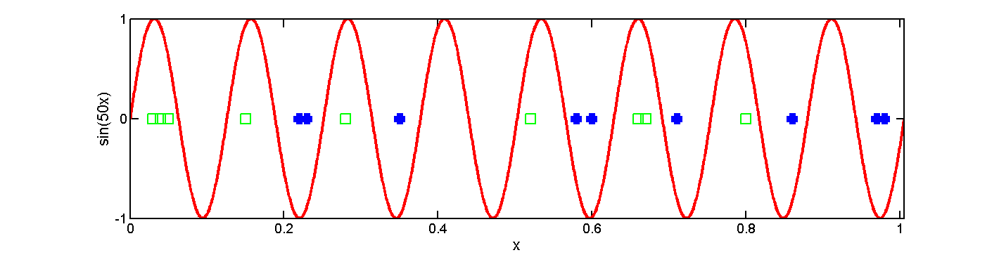

Shattered sin
domain = 0:0.0005:1.005; f = @(x)sin(50*x); hollow = [0.03,0.04,0.05,0.15,0.28,0.52,0.66,0.67,0.8]; solid = [0.22,0.23,0.35,0.58,0.6,0.71,0.86,0.97,0.98]; plot(domain,f(domain),'-r','LineWidth',3); hold on; plot(hollow,zeros(1,numel(hollow)),'sg','LineWidth',2,'MarkerSize',12); plot(solid,zeros(1,numel(solid)),'sb','LineWidth',6,'MarkerSize',6); set(gca,'XTick' ,0:0.2:1,... 'YTick' ,-1:1,... 'XLim' ,[0,1.005],... 'YLim' ,[-1.0,1.0],... 'FontSize' ,14,... 'LineWidth' ,2,... 'box' ,'on'); xlabel('x','FontSize',16); ylabel('sin(50x)','FontSize',16); maximizeFigure(); p = get(gcf,'Position'); p(4) = p(4) / 2; set(gcf,'Position',p);